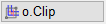
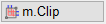
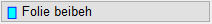
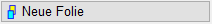
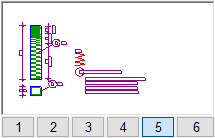

Die ISBCAD Zwischenablage kann zum schnellen Austausch von Zeichnungsinhalten in verschiedenen ISBCAD Zeichnungen genutzt werden. Die Inhalte stehen in allen zur gleichen Zeit geöffneten Instanzen von ISBCAD zur Verfügung. Dies ist dann besonders praktisch, wenn z. B. immer wieder dasselbe Detail verwendet werden soll.
Sie können eine zwischengespeicherte Teilzeichnung ebenfalls in denselben Plan einfügen.
|
Hinweis: |
|
Die ISBCAD Zwischenablage ist unabhängig von der WINDOWS®-Zwischenablage. Zum Übertragen von Zeichnungsteilen in externe Programme (z. B. MS Word) kann die Funktion [Datei | Grafik | Speichern] verwendet werden. » Grafik. |

Funktionen |
Beschreibung |
|---|---|
Zeichnungsteile in die ISBCAD Zwischenablage kopieren. |
|
Zeichnungsteile aus der ISBCAD Zwischenablage einfügen. |
Optionen |
Beschreibung |
|---|---|
  |
o.Clip (nur ganze Elemente): Geschnittene Linien und Kreise werden nicht übernommen. m.Clip (Bereich ausschneiden): Geschnittene Linien und Kreise werden übernommen. |
 |
Beim Einfügen von Inhalten bleiben vorhandene Folien erhalten. |
 |
Inhalt der Zwischenablage in eine bestimmte Folie transformieren. Öffnet den Dialog Neue Folie. |
Doppelt vorkommende Folien werden getrennt. |
|
Llö (Letzte Zwischenablage löschen): Löscht den letzten Zeichnungsteil in der Zwischenablage. Alö (Alle Zwischenablagen löschen): Löscht alle Zeichnungsteile in der Zwischenablage. Akt (Aktualisieren): Aktualisiert die Anzeige aller vorhandenen Zeichnungsausschnitte. Erforderlich, wenn mehrere ISBCAD Instanzen mit verschiedenen Zeichnungen geöffnet sind. Beispiel [Akt]: In zwei Instanzen wird mit der Zwischenablage gearbeitet. Aus der ersten Zeichnung wird ein Ausschnitt in die Zwischenablage gelegt, sichtbar im Anzeigefenster. Wenn Sie jetzt in die zweite Zeichnung wechseln, wird die zuletzt erzeugte Zwischenablage nicht angezeigt. Sie müssen diese Anzeige erst aktualisieren, um sie auch in der zweiten Zeichnung anzuzeigen. |
|
 |
Vorschau und Auswahl der in der Zwischenablage enthaltenen Zeichnungsteile. Über die Auswahlnummern unter der Vorschau können Sie die entsprechende Teilzeichnung wählen. Mit der ISBCAD Zwischenablage können bis zu sechs beliebige Zeichnungsteile (Bereiche) gespeichert und abgerufen werden. Wenn Sie die maximale Anzahl der Zeichnungsteile überschreiten, wird der erste gespeicherte Zeichnungsteil durch den letzten ersetzt. |
Ändern der Plotfläche. |
|
|
Auswahl-Optionen: Rechteckiger Rahmen (mit o.Clip und m.Clip möglich); Polygonaler Rahmen (nur mit o.Clip möglich). |


Zugehörige Referenzen:
Siehe auch: